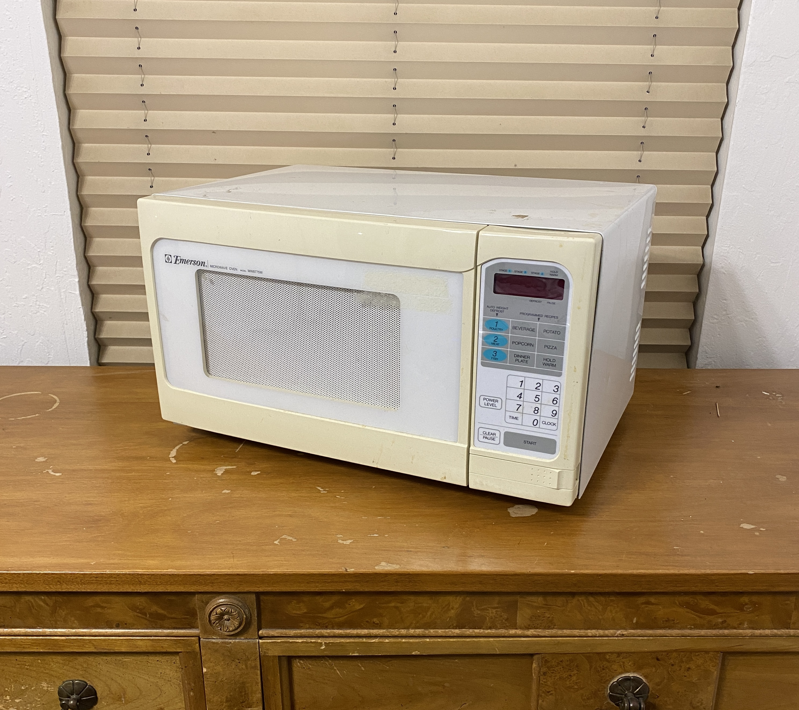
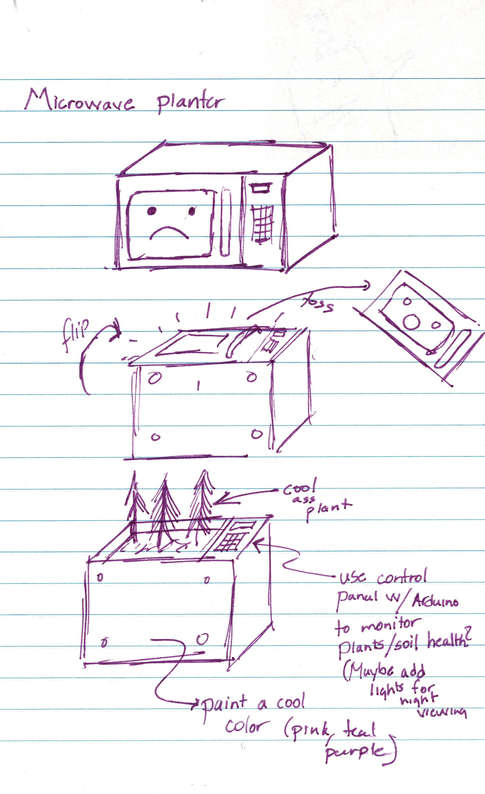

Project 3 - Micro-Planter


This is a current project that I am working on for my Design MFA thesis. More updates to come!
The core motivation for this project was to tackle the issue of recycling cooking appliances such as microwaves, ovens, stoves. By the time these objects reach the dumpsite, the appeal to repair and reuse these items is diminished, due to their bulky nature and the health concerns with cooking items in appliances that have spent time at a dump or recycling plant. While metal recycling is typically the next step in these products' life cycle, I propose an alternative approach of reusing these objects to cultivate botanical life as planters. The following work will go into the process of repurposing a microwave to be reused as a smart planter. The purpose of this work is to not only reuse a broken kitchen appliance, but to provide added value to the object by: 1) incorporating additional functionality, 2) incorporating artisanal handiwork to the assembly (as opposed to the original assembly work done when it was mass produced).